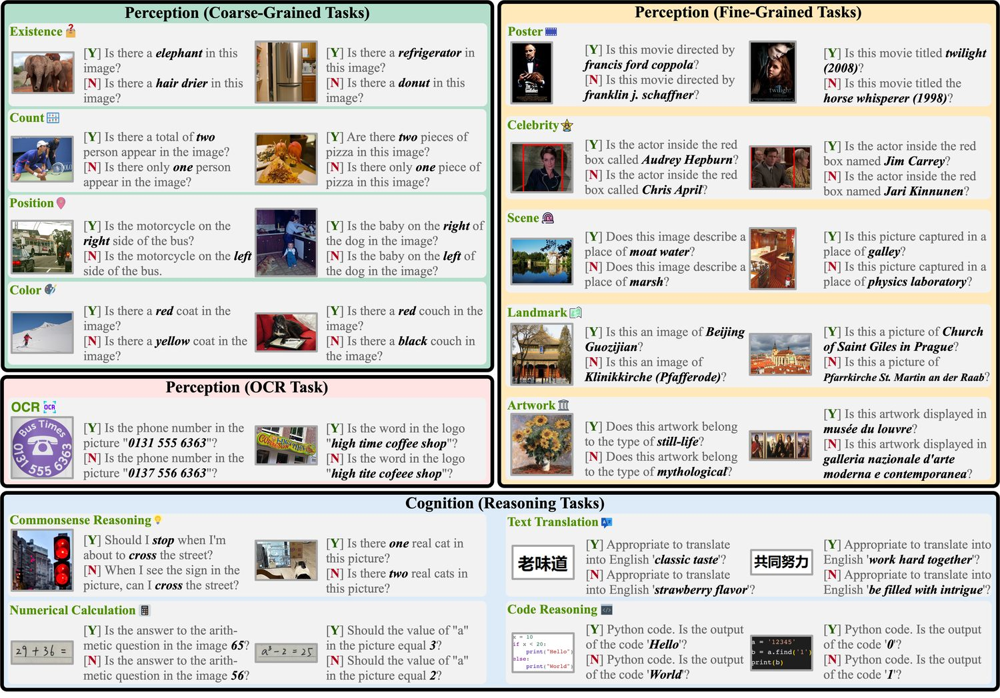
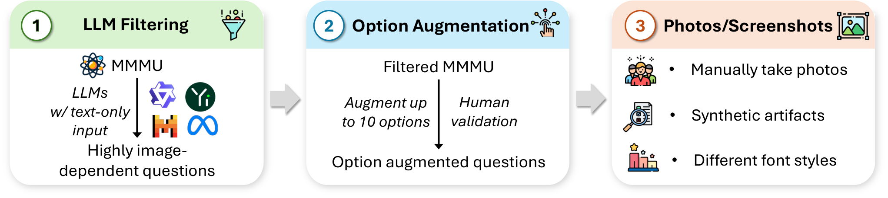
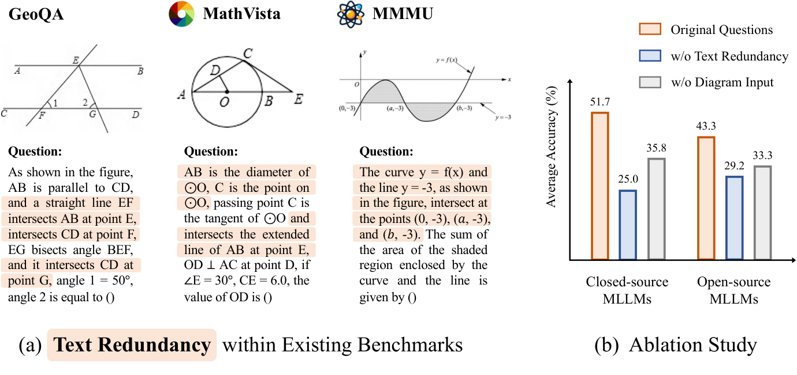
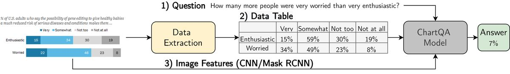
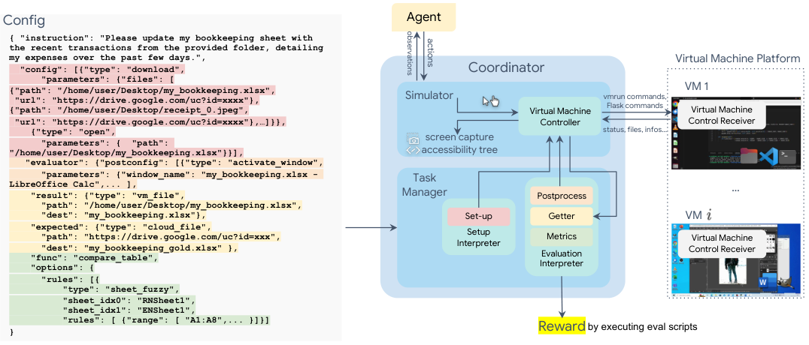

第 40 章 多模态评测基准全景
💡 本章导读
评测是多模态工程体系里"既最简单又最难"的一环——简单在"跑个脚本就有分"，难在"分数与你关心的能力往往不是一回事"。本章先把方法论地基打牢（判卷陷阱、LLM-as-judge 偏差），再按"通用/知识/推理/文档/视频/幻觉/Agent/生成"八大类巡礼基准全景（每一类都给出“判卷陷阱+读分姿势”），最后落到"企业自建评测体系"的工程配方。本章是全书评测知识的总纲：前面各章的评测（POPE、VBench、Video-MME）在此汇合，后面第 41 章安全评测是本章方法的特化。
1.评测方法论：选择题、开放式与判卷的陷阱
多模态评测的三种题型，各有致命陷阱：①选择题——便宜可自动判卷，但选项作弊（模型不看图靠语言先验就能排除错误选项——MMStar 论文实测：多个早期模型在"无图模式"下仍能答对 60–80% 的 MMBench 题！）、选项位置偏差（模型偏爱 A/C）、以及"一张图答多题"的上下文泄漏。②开放式生成——更真实，但答案提取是雷区：要求"直接回答 A"模型却输出"The answer is (A) because..."——正则提取失败就记零分（MMBench 的 CircularEval 与提取容错就是为此设计）；数字/单位/大小写归一化不当造成的假阴性比比皆是。③LLM-as-judge——用 GPT-4 级模型给开放回答判卷，但偏差有四：位置偏差（先出现的答案更易被判好）、长度偏差（长回答得分高）、自我偏好（GPT 判 GPT 系回答更宽容）、多模态特有——判卷模型自己看不见图（只拿到问题与两个回答，无法核验"谁真的看了图"，幻觉回答可能被判为"流畅的好回答"）。方法论的黄金组合：选择题用于规模化筛查（但必须报告"无图基线"！）、开放式+裁判模型用于能力深挖（但裁判协议要"带图判卷+随机位置+长度平衡"）、人工抽检 5–10% 校准裁判。
LLM-as-judge 的"裁判幻觉"问题（多模态特有，比文本更隐蔽）：文本评测中裁判至少能核验"回答与参考答案的逻辑一致性"；多模态评测中裁判面对"两个都引用了图像细节的回答"——若裁判自己看不到图（或拿到的图分辨率低于被测模型），它无法分辨"谁在正确引用、谁在编造细节"——编造得更具体、更流畅的回答反而更可能赢得裁判青睐。防御三件套：①判卷必须带图（且分辨率不低于被测输入）；②参考答案必给（裁判只做"对齐参考"的比较，不做"凭空评分"）；③"细节核验"抽样——对裁判选出的胜者，人工复核其"图像细节引用"的真实性（抽 50 条即可估计裁判的"被骗率"）。
评测报告的"最小元数据模板"（任何评测结果没有这些字段都不算数）：模型版本与推理参数（temperature/ max_tokens）、评测集版本与 hash、prompt 模板原文、抽帧配置（视频类）、判卷方式与裁判版本（judge 类）、运行日期与硬件。缺元数据的分数在两周后就会变成"无主数字"——没人记得它怎么来的、能不能复现、和当前配置是否可比。评测管理的本质是"把一次性的分数变成可追溯的数据资产"，元数据模板是这条路的起点。
实操：把模板做成评测配置文件（YAML），每次评测随结果入库——两周后你的结果库就有了“按任意元数据字段切片”的能力，“对比所有 temperature=0 的跑分”变成一行查询。
答案提取的"工程对抗"细节（开放式判卷前的第一道工序）：①多模式提取——正则（"答案是 X"/(A)/选项内容匹配）+语义匹配（候选选项与回答的 embedding 相似度）双通道，不一致时降级到 judge 判断；②归一化词典——数字（"三点五"="3.5"）、单位（"50%"="0.5"）、大小写、全半角—— DocVQA 的 ANLS 指标就是"编辑距离容忍"的规范化实现；③"拒答也算分类"——模型明确说"图中无法判断"时计入"拒答率"而非"错误率"——混淆这两者会掩盖"对齐过头"的信号（第 37 章）。提取层的错误是"评测工程师的 bug"而非"模型的 bug"——线上报告的可信度始于提取的正确率，建议对 100 条提取结果做人工抽检。
💻 代码：选择题评测的"稳健提取 + CircularEval"骨架
import re, itertools
CHOICES = ["A", "B", "C", "D"]
def extract_choice(response: str):
"""多模式稳健提取：规则优先，语义兜底"""
# 模式1：显式声明（答案是 X / The answer is (X)）
m = re.search(r"(?:答案|answer|option)[^A-D]*([A-D])",
response, re.IGNORECASE)
if m: return m.group(1).upper()
# 模式2：首出现的独立选项字母
m = re.search(r"([A-D])", response)
if m: return m.group(1).upper()
# 模式3：选项内容匹配（回答里写了选项原文）
return None # 交由上层用选项文本相似度兜底
def circular_eval(question, options, answer_fn):
"""CircularEval：四个位置变体全对才计分（MMBench 协议）"""
for order in itertools.permutations(CHOICES): # 实际用 4 个循环变体
reordered = reorder_options(options, order)
resp = answer_fn(question, reordered)
pred = extract_choice(resp)
if pred is None or correct_letter(pred, order) is False:
return False, pred
return True, "ALL"
# 提取失败的样本（pred=None）单独入桶统计：
# 提取失败率 >5% 说明模型输出格式漂移，先修 prompt 模板再谈分数
# （格式漂移本身也是有价值的评测发现）这段骨架的两个工程要点：①提取失败率是"评测的体检指标"——它高说明你的 prompt 模板与模型输出格式不匹配（或模型指令遵循差），先修再测；②CircularEval 的全排列是 24 种，实践用 4 个循环变体（成本 4×）已足以消除位置偏差。
🍳 实战配方：一个"防作弊"的 LLM-as-judge 协议
1. 带图判卷：裁判必须同时拿到图像、问题、参考答案与两个候选回答（只给回答不给图 = 无法核验"谁在看图说话"）；2. 随机化：候选顺序随机（位置偏差）、必要时跑双向（A-B 与 B-A 各一次，不一致则人工仲裁）；3. 锚定：给裁判"参考答案+评分细则"（1–5 分锚点描述），而非开放式评论；4. 长度中性：细则中明确"长度不作为评分维度"；5. 抽检校准：5–10% 人工复判，裁判与人工一致率 <85% 则调整协议或换裁判。6. 记录裁判身份与版本（裁判模型升级 = 换了一把尺子，历史分数必须标注不可比）。这套协议的六条来自四个基准论文的实测教训，直接抄用即可把"裁判幻觉"与"裁判偏科"压到可控。
落地时的工具建议：裁判调用与评分解析写成独立模块（换裁判模型不动管线），裁判的原始输出全文存档（审计与复现都需要"裁判当时看到了什么"）。
📐 理论："无图基线"是评测的第一道数学防线
形式化：设模型在完整评测上的分数为 $S_\text{full}$，把图像替换为空白/噪声后的分数为 $S_\text{blind}$——则 $S_\text{blind}$ 是"纯语言先验能走多远"的测量。有效视觉贡献可估计为 $\Delta S = S_\text{full} - S_\text{blind}$；一个健康的视觉评测应满足 $S_\text{blind} \approx$ 随机水平（选择题 25–33%、判断题 50%）。MMStar 的六角星筛选标准就是这套思想的工程化，也是全书评测方法的锚点：先用"文本-only 模型"预筛掉"不看图也能答对"的题，只保留 $\Delta S$ 显著的样本。推广到自建评测：任何上线前的自建评测集，第一步就是跑无图基线——这一步能过滤掉 30–60% 的"伪视觉题"，成本近乎为零而收益巨大。"先测语言先验再测视觉能力"应成为所有视觉评测的固定流程。
2.通用与知识基准：MME、MMBench、MMMU
MME（arXiv:2306.13394）是"感知+认知"的双维诊断器：感知维 10 项（存在性/计数/位置/颜色/OCR/海报/名人/场景/地标/艺术品）+ 认知维 4 项（常识推理/数值计算/文本翻译/代码推理），全部是/否题设计（正反两问：图中有没有 X + 图中是不是没有 X——专测"迎合性说有"），计分制是"准确率+正反一致率"的复合。MMBench（arXiv:2307.06281）的贡献在能力体系与 CircularEval：定义 20 个细粒度能力维度（粗细粒度感知、推理、知识、定位…），选择题按能力维度报告雷达图；CircularEval 把每题的四个选项循环轮转出 4 个变体（正确答案轮换位置），全对才计分——位置偏差的"物理隔离"。MMMU（arXiv:2311.16502）是"多模态的高考"：11.5K 大学级多学科题（30 个学科、30 种图表类型），考"学科知识+多图联合推理"，GPT-4V 也只有 56%（人类专家 82%）——是"知识天花板"的标尺；其升级版 MMMU-Pro（arXiv:2409.02813）做了两件"反作弊"的事：候选选项直接渲染进图像（文字-only 模型彻底失效）+ 题目从 4 选项扩到 10 选项——模型分数普遍掉 15–30%，揭示原版 MMMU 被语言先验"虚高"的程度。三个基准的分工：MME 快速诊断（3000 题半小时跑完）、MMBench 能力雷达（报告用）、MMMU 天花板标尺（论文用）。
评测维度地图（把全书出现的基准放进一张图）：


通用基准的"使用注意"清单：①MME 的分数构成——感知分与认知分分开报告（总分掩盖"感知满分、认知崩溃"的常见模式）；②MMBench 的 CircularEval 成本——4 倍推理开销，跑全量前先估算算力（3000 题×4 变体=1.2 万次推理）；③MMMU 的"学科分项"——STEM 与人文的分差常达 20 分以上（模型的"理科幻觉"更多），选型时按你的领域看分项而非总分；④多选题的"重复选项检测"——两个选项语义相同时，模型的选择反映"训练分布偏好"而非能力，遇到应剔除。这些细节的共性：基准是"测量仪器"，仪器的读数规则必须先读说明书再使用——评测报告的可信度一半来自仪器、一半来自用法。
这份清单本身就是“评测审查单”：拿任何一份评测报告对照这四条，缺哪条就标注“该项未控制”——审查比补做便宜，标注比隐瞒诚实。
| 使用场景 | 首选 | 理由 | 必查分项 |
|---|---|---|---|
| 开发期快速迭代（每天跑） | MME | 3k 题、是/否、半小时出结果 | 感知/认知分开 |
| 版本发布报告 | MMBench + MMStar | 雷达图+反污染双保险 | 20 维能力+六维真视觉 |
| 论文投稿对标 | MMMU + MMBench | 社区默认双榜 | 学科分项 |
| 模型选型采购 | MMMU-Pro + 业务集 | 反作弊+业务真实分布 | 无图基线、学科分项 |
| 回归测试（每次提交） | MME 子集 + 业务金标 A 半 | 成本最低 | 与上版对比 |
MME"正反双问"设计的数学直觉（一个可推广的判卷模式）：对每个物体问"图中有没有 X"（正向）与"图中是不是没有 X"（反向）——模型若真"看懂了"，两题答案应相反；若只会"逢问说有"，正向全对反向全错。复合分=正向准确率+反向准确率+一致率加权。这个"镜像对"模式可推广到一切判别式评测：位置判断（"X 在 Y 左边"vs"X 在 Y 右边"）、属性（"这是红色的"vs"这不是红色的"）——镜像对的成本是题目翻倍，收益是"迎合偏差"的显式测量（正反一致率本身就是诊断指标）。自建评测时，对高风险能力至少配 20% 的镜像对。
镜像对还有一个隐藏收益：正反两题的“意见分歧样本”（正向说有、反向也说有）是最好的迎合偏差研究素材——单独导出后可作为下一轮偏好数据的定向构造原料（第 37 章）。
MMMU 学科分项的"专业购"用法（垂直团队选型必查）：医疗团队看 Health & Medicine 分项、法律看 Law、工程看 Engineering——学科分项的模型排名与总榜差异可达 5–10 位（开源模型在人文类冲得猛、STEM 普遍落后于闭源）。更进一步的做法是"分项×题型"交叉：同一学科里"图表题"与"纯文本题"的分差=该学科"视觉知识依赖度"——依赖度高的学科（化学结构式、电路图、解剖图）最需要"真多模态"，选型时权重上调。把总榜分数"按需切片"的能力，是评测素养从 L1 到 L2 的标志。
3.推理与文档基准：MathVista、OCRBench、ChartQA
MathVista（arXiv:2310.02215）把"视觉数学推理"系统化：6141 题，覆盖 28k 图像中的五种视觉场景（自然图、几何图、函数曲线、表格、统计图）与 9 种题型——它的价值在"子任务诊断表"：把数学能力拆成"感知（读数）、推理（计算）、领域知识"三层报告，模型短板一目了然。MathVerse（arXiv:2403.14624）则进一步"把文本信息抽走"：同一道题构造 6 个版本（从"文本全描述"到"纯图无文字"），实测多数模型在"无文字冗余"版本上分数腰斩——揭示"很多模型在做数学时主要靠读题面文字而非看图"。它的"视觉冗余度"设计是"证据依赖性"评测的代表作。
迁移提示：自建集可复用此设计——同一道业务题构造“带图/去图”双版本，两版本分差即业务题的视觉依赖度，专治“不看图也能答”的伪视觉题。
文档侧三剑客：OCRBench（2023）——29k 问句覆盖 5 大类 OCR 任务（文本识别/定位/VQA/表格/公式），专测"视觉文字理解"极限；DocVQA（arXiv:2007.00387）——12.7k 文档页问答，考"版面理解+文字定位"；ChartQA（arXiv:2203.10244）——图表问答双形态（人工出题靠视觉推理、程序生成靠精确读数），把"图表理解"从"读数"细化到"趋势推理"。这一类基准的通病是"OCR 能力与推理能力纠缠"——读错一个数字整题全错，报告分数时必须附"感知正确率"分项，否则无法归因。

| 业务形态 | 首选基准 | 辅助基准 | 自建集重点 |
|---|---|---|---|
| 文档智能（合同/票据） | DocVQA | OCRBench 文本VQA | 真实版面+字段级金标 |
| BI 报表/数据看板 | ChartQA | MathVista 表格子集 | 自有报表模板+趋势题 |
| 教育/题库识别 | OCRBench 公式类 | MathVista 几何 | 手写/印刷混合样本 |
| 场景文字（街景/菜单） | OCRBench | MME OCR 分项 | 真实场景+字体分布 |
文档类自建集的"字段级金标"设计：不问"这页写了什么"（无法判卷），而问"发票号是多少/总价在哪一行"——答案短、可精确匹配、可按字段类型统计错误（数字错/漏读/位置错）——金标集的设计目标不是"难"，而是"每一个错误都可归因"。
MathVista 三层归因的实操示例：某模型 MathVista 总分 45%，拆解后发现"感知层正确率 85%（读数基本对）、推理层 50%（算错）、领域层 30%（公式不会）"——归因结论：感知不是瓶颈，该补数学数据而非图像分辨率。另一个模型总分同样 45%，但"感知层 60%、推理层 75%"——归因结论：读图不行，该补 OCR/图表数据或提高分辨率。两个总分相同的模型，处方完全相反——这就是"分数必须可归因"的含义：总分为决策提供方向，归因才提供处方。
OCR 能力的"分层实测法"（比单一 OCRBench 总分更有用）：L1 字符识别（清晰印刷体）→ L2 场景文字（斜切/艺术字/低对比）→ L3 文字与版面联合（表格结构、多栏阅读顺序）→ L4 文字推理（读数后计算、签名含义、文字与图像关系）。实测规律：多数模型 L1 已接近饱和、L2 是当前主战场、L4 是分水岭——"能读出来"与"读懂了"的差距在 L4 上集中暴露（ChartQA 的程序生成题本质就是 L3+L4）。自建 OCR 评测按此分层，可以精确定位"该买 OCR 专用模型还是升级通用 VLM"的决策依据。
4.视频、幻觉与 Agent 评测
视频侧（第 31 章已详述，此处归位）：Video-MME（时长分桶的金标准）、MVBench（20 类时序任务）、TempCompass（时间感知最小对）——三者合用时遵循"综合→时序→时间感知"的漏斗顺序。幻觉侧（第 37 章详述）：POPE（存在性倾向）、AMBER（生成式广度）、HallusionBench（先验冲突）——判别式与生成式互补。Agent 侧是 2024–2026 年增长最快的评测战线：OSWorld（arXiv:2404.07972）——"真实电脑环境"的 Agent 评测：在 Ubuntu VM 里给定任务（"帮我把这个 PDF 转成 Word"），Agent 操作真实 GUI 完成任务，按"最终状态是否达成"判卷（文件存在、设置生效）——369 个真实任务、跨 6 个应用，GPT-4V 类模型成功率仅 7–12%（人类 72%），是"多模态 Agent 与人类差距"的最权威量化；WebVoyager——真实网页上的多模态浏览任务（15 个网站、643 任务），考"看懂网页+操作导航"；GUI-World——GUI 视频理解（录屏类的时序推理）。Agent 评测的方法论突破在"状态判卷"：不再判"回答得对不对"，而是判"世界的状态对不对"（文件真的被改名了吗）——判卷从"语言空间"回到"物理/系统空间"，这是多模态评测与 LLM 评测的根本分野。

Agent 评测的指标族（比"成功率"更细的四个数）：①单步动作准确率——每步操作（点击/键入）与人类示范的匹配度；②任务完成率——终态判卷（OSWorld 主指标）；③步数效率——完成任务的步数与最优路径之比（冗余操作率）；④恢复率——出错后能在 N 步内回到正轨的比例。四指标的组合能区分"鲁棒的笨 Agent"与"脆弱的聪明 Agent"：前者单步低但恢复高（适合高风险场景），后者反之——业务匹配比单一成功率更重要。
视频与幻觉评测的"抽帧协议统一"问题（横向对比时最常踩的坑）：同一模型在不同抽帧配置下（fps、帧数、分辨率）分数可差 10–20 分——横向对比必须在"协议对齐"下进行（官方推荐的帧数配置、或显式声明自己的配置）。评测协议是"测量的单位制"——单位制不统一的分数比较没有意义。同理，幻觉评测的"图像分辨率"也影响 POPE 分数（低分辨率下小物体"看不见"导致的"说没有"不是幻觉而是感知极限）——评测报告必须附"协议元数据"（帧数、分辨率、prompt 模板、温度），这是评测可复现性的最低要求。
Agent 评测的三层抽象（选型时先确认基准在哪一层）：①截图理解层——给定屏幕截图回答问题（"这个按钮在哪"）——静态感知，与普通 VQA 无本质区别；②单步操作层——给定截图+指令，输出下一步操作（点击坐标/键入内容）——动作空间的理解，OSWorld/WebArena 的主体；③长程任务层——多步操作直到任务完成（含错误恢复）——考察"规划+感知+操作+反思"的闭环，成功率随步数指数衰减（5 步任务的失败率 ≈ 1-(1-p)^5）。当前模型的主要瓶颈在第二到三层的过渡：单步操作已可用（60–80%），长程任务成功率仍低（<30%）——"任务越长，差距越大"是 Agent 评测的核心规律，也是第 43 章 Agent 架构（规划器/记忆/反思）存在的原因。
视频与 Agent 评测的"工程门槛"差异（为什么两者成熟度不同）：视频评测的输入是"固定的视频文件+问题"——判卷与图像 VQA 同构，只需解决"抽帧策略统一"（第 31 章）；Agent 评测的输入是"活的虚拟机+交互序列"——需要环境快照、动作执行沙箱、终态核验器，基础设施复杂一个量级。这解释了为什么 Agent 基准的数量少但含金量高：OSWorld 的 369 个任务背后是"每个任务配一个可执行核验脚本"的工程投入——评测的工程门槛越高，被刷分的成本也越高，榜单的可信度红利也越大。
💡 技巧：评测成本的"分级跑法"
全量跑一遍主流基准的开销不小（1 个 7B 模型全基准约 50 万 token 推理+数十 GPU 时），工程上的分级跑法：每日——CI 上的子集（业务金标 A 半 + MME 500 题，<30 分钟）；每周——综合基准全量（MMBench+MMStar+POPE，约 3 小时）；每版本——重榜全跑（MMMU-Pro+MathVista+Video-MME 子集，半天）；每季度——人工评测校准（裁判一致性、金标 B 半验收）。分级的依据是"分数的决策价值"：越是接近发布决策的评测，越要全量+人工参与；越是日常迭代的评测，越要轻量+自动化。
| 基准 | 类别 | 核心设计 | 详见章节 |
|---|---|---|---|
| Video-MME | 视频理解 | 时长三档分桶、字幕对照 | 第 31 章 |
| MVBench | 视频时序 | 20 类时序任务、"必须看图"过滤 | 第 31 章 |
| TempCompass | 时间感知 | 最小对设计（同图改时序） | 第 31 章 |
| POPE | 幻觉存在性 | 四档是/否探针+Yes-rate | 第 37 章 |
| AMBER | 幻觉广度 | 判别+生成双任务 | 第 37 章 |
| HallusionBench | 先验冲突 | 图文冲突最小对 | 第 37 章 |
| OSWorld / WebVoyager | GUI/Web Agent | 真实环境+状态判卷 | 本章/第 43 章 |
| SIMPLER / CALVIN / LIBERO | 机器人 VLA | 仿真核验、长程指令链 | 第 33 章 |
5.生成评测：VBench、GenEval 与人类偏好
生成侧的评测（第 27/29 章已有分述）在此统一成一张地图：图像生成——GenEval（结构化能力归因：对象/计数/位置/颜色/文字）、DPG-Bench（组合语义）、HPS v2/ImageReward（人类偏好评分器）、Artificial Analysis Arena（匿名对战 Elo）；视频生成——VBench（16 维度计分卡）、T2V-CompBench（组合能力）、Video Arena；编辑类——ImgEdit/EmuEdit（指令遵循+主体保持双指标）。生成评测的方法论共识：①"总分骗人"——必须报分项雷达（GenEval 六项里计数/文字常年是短板）；②"偏好模型会被过拟合"（HPS 被用作 RLHF 目标后即漂移，需定期换新版本）；③"Arena 是金标准但慢"——发布前小规模盲测（50–100 对）即可校准自动指标的代表性。与理解侧评测的根本差异：理解侧"有标准答案"，生成侧"只有偏好"——所以生成评测的进化方向是"把主观偏好客观化"（构造判卷器）而非"寻找唯一正确答案"。
GenEval 分项雷达的"诊断读法"（生成评测最具工程价值的部分）：六个分项（单对象/双对象/计数/颜色/位置/属性绑定）的"短板组合"可反推训练缺陷——计数与位置双低→空间组合能力不足（数据里空间关系标注少）；颜色高但属性绑定低→"颜色作为全局风格"学到了、"颜色绑定到特定对象"没学会（数据里颜色-对象的绑定表达不足）。分项雷达的另一个用途是选型：广告业务（重属性）与地图业务（重位置）应选"各自强项"的模型而非总分最高者。生成评测的总分只在"同业务同需求"下才有意义。
| 基准 | 对象 | 判卷方式 | 核心维度 | 用途 |
|---|---|---|---|---|
| GenEval | T2I | 检测器+OCR 自动判卷 | 对象/计数/位置/颜色/文字 | 能力归因 |
| DPG-Bench | T2I | VQA 式判卷 | 组合语义（属性/关系/复杂） | 组合能力 |
| HPS v2 / ImageReward | T2I | 人类偏好评分器 | 综合审美与对齐 | 选型定标（易被过拟合） |
| VBench | T2V | 16 维专用判卷器 | 一致性/运动/对齐/审美/动态 | 视频发布标配 |
| ImgEdit / EmuEdit | 图像编辑 | 双判卷器 | 指令遵循+主体保持 | 编辑类双指标 |
| AA Arena | T2I/T2V | 人类匿名对战 Elo | 综合口碑 | 金标准（慢） |
Arena 机制的三条统计纪律（自建小型 Arena 时直接抄）：①双盲——模型名与生成顺序都对标注者隐藏；②位置轮换——同一对模型跑 A-B 与 B-A 两次，消除"先看到更占优"的位置效应；③分位数报告——Elo 之外报"胜率的 95% 置信区间"（对战数 <200 时 Elo 的噪声极大，置信区间比点估计诚实）。小型 Arena 的最小可行规模：每对模型 100–200 次对战、3–5 名标注者、每标注者每小时约 30 对——一个"业务专属 Arena"一天的搭建成本约等于两次全量人工评测，但产出的是可持续更新的偏好信号。
启动期的抽样技巧：优先把“裁判模型评分接近（分差<0.5）”的对子送进 Arena——裁判犹豫的样本正是人类偏好信息量最大的地方；裁判高置信的样本无需人工。
"主观偏好客观化"的三种路径（生成评测的核心方法论）：①构造判卷器——用人类偏好数据训练专用评分器（HPS/ImageReward 路线），把"人的直觉"蒸馏成"可自动计算的分数"；②结构化分解——把"这张图好不好"拆成 GenEval 式的客观子问题（有没有 X、颜色对不对），判卷变成检测（GenEval 路线）；③群体偏好聚合——Arena 式的大量人类对战+Elo 聚合（不构造绝对分数，只构造相对排名）。三条路径的成本与适用：① scalability 最高但会被过拟合；② 最抗操纵但覆盖面受限；③ 金标准但贵——成熟团队的组合是"②日常回归 + ①周度批量 + ③发布前校准"。
编辑类评测的"双指标陷阱"：指令编辑（"把背景换成海滩"）的验收必须双指标——指令遵循度（背景真的换了吗）与主体保持度（人物没被改脸吧），两者天然冲突（改得越多遵循越好、保持越差），单看任何一个都会误导选型。工程上的做法是把双指标画成帕累托前沿：不同模型/参数配置的（遵循度, 保持度）散点连成前沿线，按业务偏好在前沿上选点（安全类业务选"高保持"端、创意类选"高遵循"端）。"冲突指标画前沿"的模式适用于一切多目标评测——帮助性 vs 安全性、详细 vs 幻觉率，都是同一结构的变奏。
6.榜单生态与数据污染：动态评测的兴起
数据污染（benchmark contamination）是公开榜单的慢性病：测试题进入训练语料（网络转载、GitHub 泄露、合成数据回流），模型"背过题"导致分数虚高——实测手段：模型的"原文续写概率"异常高、"扰动敏感性"异常低（改个数字就不会了）。污染的产业链尤其讽刺：模型发布→刷榜→评测题被写进下一轮训练数据→榜单整体通胀。对抗污染的三代方案：①扰动——MMMU-Pro 的"选项入图"、MathVerse 的"去文本冗余"（改变题面形态使背题失效）；②私有化——企业自建集（第 7 节）；③动态化——LiveBench 思想（题目定期更换+按时间戳分层报告，"旧题分数"与"新题分数"分开看——新题分数才是真实能力）。读榜单的正确姿势：①看"发布时间差"（模型发布晚于基准多久——越晚污染风险越高）；②看"同基准不同版本"的分数变化（异常平滑=可疑）；③交叉基准一致性（各基准的相对排名是否自洽——单榜第一多榜平庸的模型高度可疑）；④优先信"反作弊设计"的新一代基准（MMMU-Pro、MMStar、LiveBench 系）。
污染检测的四个实用探针（怀疑模型"背题"时用）：①续写探针——给模型看题面（不含问题），测答案 token 的困惑度——异常低=背过；②扰动探针——改数字/换人名/换单位重测——分数暴跌=背过原题；③时序探针——按"题目公开时间"分层报告分数（公开前的题 vs 后收集的题，差距大=污染）；④成员推断探针——min-K% prob 类方法估计"该样本在训练集的概率"。四个探针的成本从低到高，建议自建评测至少常驻②③两个——它们同时是"模型是否泄漏业务数据"的隐私审计工具（训练语料混入了业务题）。
📄 论文精读：MMStar 的"六角星"筛选（arXiv:2403.20330）
动机：作者实测发现 MMBench 等主流基准存在严重的"视觉不必要"问题——文本-only 的 LLM 在"视觉评测"上能拿 60–80% 分数，榜单排名与"真实视觉能力"的相关性存疑。方法：两阶段自动化筛选——①用六个文本-only LLM 跑全部候选题，剔除"不看图也几乎全对"的题（视觉不必要）；②用人工+LLM 复核剩余题的"视觉依赖性"（答案是否真的需要看图），最终得到 1500 题、六个能力维度的 MMStar。关键发现：在 MMStar 上，多数开源模型的排名相对 MMBench 下滑 5–15 位——"榜单第一"与"视觉最强"是两个不同的头衔；MMStar 上 Gemini 与 GPT-4V 的领先幅度比旧榜单更显著（真能力的差距被污染分数稀释了）。方法论遗产：MMStar 确立了"评测集自身的评测"（用无图基线审计评测集）这一层元评测——此后 MMMU-Pro、LiveBench 都内嵌了类似筛选。给你的直接行动：自建评测集上线前跑一次"文本-only 模型预筛"，这是成本最低、收益最确定的评测卫生措施。
一个读榜单的实战案例（把本章方法串起来）：假设某新模型宣称"MMMU 超 GPT-4V 五个点"——按四条姿势核查：①时间差：MMMU 公开两年，该模型训练数据截止时间晚于基准发布，污染风险高；②版本间：其 MMBench 与 MMMU 的相对分差是否自洽（MMMU 涨 5 分但 MMStar 掉 10 分=可疑）；③反作弊基准：查其 MMMU-Pro 分数——Pro 上普遍掉 15–30%，若该模型只掉 5%（"逆势坚挺"），要么真强要么过拟合更深；④无图基线：若其"盲测分"显著高于同行，说明语言先验贡献大。四条核查后，"超 5 个点"的真实含金量就有了专业判断——榜单阅读是一种"审计"行为，不是"看新闻"行为。
公开基准与自建集的"混搭配方"（资源有限时的最优配置）：①公开基准选 3 个——一个综合（MMStar/MME）、一个业务相关（文档/视频按业务）、一个幻觉（POPE）——固定版本、每季度检查一次是否被新模型"过拟合嫌疑"（榜单通胀明显则换）；②自建金标 500 条起步——按"场景×能力×难度"三维配比设计（第 7 节规程）；③公开基准的"用法纪律"——公开分数用于"相对监控"（自家版本间的回归），不做绝对宣称（"我们超过 GPT-4V"这类话术交给论文，工程文档里只写相对变化）。混搭的本质：公开基准提供"行业坐标系"，自建集提供"业务真值"——两者缺一，决策就只能在错误或无用的坐标系里做。
预算参考：上述“3 公开+500 金标+1 红队”最小配置一次性搭建约 2–3 人周，日常维护约 0.5 人周/月——相对一次全量微调的成本可以忽略，但它决定“这次微调的方向对不对”。
榜单之外的两个"民间信号源"（榜单之外的补充情报）：①开发者社区口碑——GitHub issues、Reddit、即刻/V2EX 的"真实用法吐槽"（榜单测不到的集成坑、prompt 敏感性、长尾失败模式在社区早期暴露）；②第三方复测——LMArena/AI 社区的独立复测帖（与官方报告的差距本身就是信息）。信号融合的权重建议：自建金标 50% + 公开榜单 25% + 民间信号 25%——自建集永远占半壁，因为它是唯一与你业务分布同分布的测量。
榜单通胀的一个量化感受：2023 年中"超过 GPT-4V"的声明开始在开源社区出现时，MMMU 上开源模型的真实分数普遍只有 GPT-4V 的 60–70%；2024 年 MMStar/MMMU-Pro 之类反作弊基准上线后，"开源超闭源"的声明显著减少——不是能力没有进步，而是"测量标准升级"挤掉了水分。这个案例的启示：评测的"测量标准"本身就是军备竞赛的一环——谁的测量更抗操纵，谁对行业的描述就更接近真相。
7.自建评测体系：企业的正确姿势
企业的自建评测体系 = "三层金字塔 + 两条纪律"。三层：①业务金标集（200–1000 条，人工精标，覆盖核心场景分布——每月迭代，防模型过拟合到旧题）；②公开基准防火墙（3–5 个公开基准固定版本定期跑——监控"通用能力回归"，防止业务微调伤基本盘）；③红队集（对抗样本、越狱 prompt、幻觉诱饵——第 41 章）。两条纪律：①"评测即代码"——评测进 CI（每次模型更新自动跑，报告带历史曲线，拒绝"手动跑一次截图进 PPT"）；②"分数必须可归因"——每个分数带能力维度标签（哪类题掉分）、错误分类（感知错/推理错/格式错）与样本 ID（可回查原始 case）。团队分工参考：评测工程师（管线与自动化）+ 业务标注（金标迭代）+ 红队（对抗）——评测团队的地位应高于算法团队内部的"自测"，独立的评测是质量的最后一道闸。
💻 代码：自建评测的 CI 骨架（评测即代码）
# eval/runner.py —— 每次模型更新自动触发的评测管线骨架
import json, subprocess, datetime
BENCHMARKS = [
{"name": "business_gold", "script": "run_gold.py", "threshold": 0.80},
{"name": "mme_perception", "script": "run_mme.py", "threshold": 0.70},
{"name": "pope_f1", "script": "run_pope.py", "threshold": 0.85},
{"name": "blind_baseline", "script": "run_blind.py", "threshold": None}, # 只记录
]
def run_all(model_ckpt: str, version_tag: str):
report = {"date": str(datetime.date.today()), "model": model_ckpt,
"tag": version_tag, "results": {}}
for bm in BENCHMARKS:
out = subprocess.run(
["python", f"eval/{bm['script']}", "--ckpt", model_ckpt],
capture_output=True, text=True).stdout
score = json.loads(out)["score"]
ok = (bm["threshold"] is None or score >= bm["threshold"])
report["results"][bm["name"]] = {"score": score,
"threshold": bm["threshold"],
"pass": ok}
# 回归检查：与上一版本对比，跌幅 >2% 即告警（含通过项）
with open(f"reports/{version_tag}.json", "w") as f:
json.dump(report, f, indent=2)
return all(r["pass"] for r in report["results"].values())
# CI 集成（.gitlab-ci.yml / GitHub Actions 片段）：
# eval_gate:
# script: python eval/runner.py $MODEL_CKPT $CI_COMMIT_SHA
# → 不达标直接 fail，模型不得进入发布流程三个工程要点：①blind_baseline 是常驻项——每次都跑（成本极低），它是评测集自身健康度的哨兵；②历史分数带 tag 入库——回归比较与"审计追溯"都需要；③阈值不是拍脑袋——从上一版本的实际分数推导（新版本阈值 = 旧分数 - 2%），让门槛随能力水位自然爬升。
红队集的构造来源（三层结构的第三层怎么搭）：①文献改编——公开越狱/攻击论文的手法移植到你的业务（第 41 章技术清单）；②线上挖掘——用户真实输入中"差点造成事故"的样本（安全过滤系统放行但人工拦截的案例，是天然的红队种子）；③AI 生成——用强模型批量构造"边缘案例"（相似但不同的实体、误导性图文组合），人工审核入库；④事故回放——每次线上事故的输入永久进入红队集（同一坑不踩两次）。红队集的规模不必大（数百条足矣），但必须"覆盖最新攻击面"——它是对抗性资产，保鲜比齐全重要。
与第 41 章的分工：本章的红队集聚焦"能力边界诱饵"（幻觉、误导性图文），第 41 章聚焦"安全攻击"（越狱、注入、深度伪造）——两套集子在管线上共用，在语义上分治。
| 基准 | 模态/领域 | 规模 | 题型 | 特色与用途 |
|---|---|---|---|---|
| MME | 图像通用 | ~3k 题 | 是/否双问 | 快速诊断感知+认知 |
| MMBench | 图像通用 | ~3k | 选择+CircularEval | 20 维能力雷达 |
| MMStar | 图像通用 | 1500 | 选择（筛选后） | 反污染的"真视觉"榜 |
| MMMU / Pro | 图像学科知识 | 11.5k | 多学科选择 | 知识天花板；Pro 反作弊 |
| MathVista | 图像数学 | 6.1k | 混合 | 三层能力归因 |
| MathVerse | 图像数学 | 2.6k×6 版 | 多版本 | 视觉冗余度依赖测量 |
| OCRBench | 图像 OCR | 29k | 混合 | 文字理解极限 |
| DocVQA / ChartQA | 文档/图表 | 12.7k / 20.9k | VQA | 版面与图表理解 |
| Video-MME | 视频 | 2.7k QA | VQA | 时长分桶金标准 |
| OSWorld | GUI Agent | 369 任务 | 状态判卷 | 真实环境 Agent 标尺 |
| POPE / HallusionBench | 幻觉 | 9k / 2.5k | 探针/冲突对 | 倾向与本质（第 37 章） |
评测体系的"成熟度模型"（给团队自评）：L1——会用公开基准出分（多数团队的起点）；L2——判卷协议化（无图基线、CircularEval、裁判协议）；L3——自建金标+CI 门禁（评测即代码）；L4——元评测（污染探针、评测集审计、动态轮换）；L5——评测驱动研发（评测结果直接生成训练数据需求，与第 34 章飞轮打通）。每上一级，研发迭代的"信噪比"上一个台阶——评测成熟度是 AI 团队工程化水平的最好单一指标。
自评方法：拿最近三个模型版本问三个问题——“每个版本的分数能追溯到确切配置吗”（L2）、“上次的发布被评测挡下过吗”（L3）、“评测集最近一次更新是什么时候”（L4）。三个问题答不上来的团队，大概率还在 L1。
金标集的迭代规程（防"评测集过拟合"的运营细节）：①轮换制——金标集分 A/B 两半，A 半常驻训练、B 半隔离（只用于验收），每季度轮换并补充新样本；②难度保鲜——模型通过率 >95% 的题自动"退役"进回归集（它们不再提供梯度信息），新难例持续入库；③分布对账——金标集的场景分布每半年与线上真实分布对账（线上出现了新品类则金标集同步扩），防止"评测集冻结在一年前的世界"。金标集是"活的资产"而非"一次性的题库"——它是整个迭代飞轮的坐标系，坐标系漂了所有分数都失去意义。
与第 34 章的连接：B 半（隔离半区）中“模型答错”的样本正是飞轮“失败挖掘”的高价值原料——评测体系与数据飞轮共享同一批资产，是 L5（评测驱动研发）的物理基础。
"评测即代码"的三个工程组件（把第 7 节的纪律落到工具栈）：①评测仓库——评测集（数据）与评测器（代码）分仓或分区管理，评测集带版本号与变更日志（数据也是代码，也要 review）；②结果数据库——分数入库（SQLite/Postgres 均可）而非 JSON 文件散落——有了库，历史曲线、跨模型对比、"哪次变更引入的退化"都变成 SQL 查询；③报告生成器——从库自动渲染"版本对比页"（雷达图+回归表+失败样本链接），替代手工 PPT。三个组件没有一个是"高级技术"，但它们的存在与否决定了评测是"研发基础设施"还是" periodic 作业"。
最小可行实现：评测仓库=git+DVC 版本；结果库=单表 SQLite 起步；报告生成器=50 行 Jinja 脚本——合计一至两天搭建成本，评测从“脚本包”升格为“系统”。
| 维度 | 取值与配比 | 设计理由 |
|---|---|---|
| 场景 × | 商品咨询 40% / 订单查询 25% / 售后图文 20% / 复杂投诉 15% | 对齐线上查询分布 |
| 能力 × | 属性读取 30% / 多图对比 20% / 定位指认 20% / 计算合计 15% / 拒答场景 15% | 覆盖核心能力+拒答校准 |
| 难度 × | 易 30% / 中 50% / 难 20% | 保证梯度、留出成长空间 |
三维交叉而非独立抽样：按"场景×能力"交叉生成题目清单（如"售后图文×定位指认"需要 20×20%=20 条）——交叉设计保证每个"能力-场景"格子都有样本，避免"能力覆盖了但场景偏了"的隐性盲区。拒答场景（图中确实没有答案）单独 15%，专测"该说不确定时说不确定"——它是第 37 章拒答校准在业务侧的验收位。
8.本章小结
多模态评测的成熟度标志是三层意识：第一层（跑分）——会用公开基准；第二层（判卷）——知道选择权的陷阱、无图基线、CircularEval、裁判协议；第三层（元评测）——知道榜单本身会被污染、会用"评测集的评测"（MMStar 式筛选）与动态评测对抗通胀。企业侧的自建体系把三层意识工程化为"金标+防火墙+红队"三层结构与"评测即代码"的纪律。与全书各章的关系：本章是第 27/29/31/37 章各模态评测的汇流与总纲，第 41 章把其中的"红队"一层展开成完整的安全评测体系。评测的本质不是给模型发奖状，而是给工程决策提供可信的信号——信号的质量决定整个迭代飞轮的方向是否正确。
🍳 实战配方：从零搭建评测体系的 30 天计划
第 1 周：地基——跑通 3 个公开基准的自动化管线（选 MME/MMStar/POPE 起步），接入 CI，产出第一份带元数据的报告。第 2 周：金标——从业务日志抽 500 条真实查询，人工改写为可判卷的金标（字段级答案+能力标签），做一次无图基线体检。第 3 周：门禁——定义阈值与回归规则（掉 2% 告警、掉 5% 阻断发布），接入发布流程，第一次用评测"挡下"一个不合格版本。第 4 周：运营化——建立季度轮换与难度保鲜规程，搭小型 Arena（3 人×100 对）校准裁判，产出"评测体系 v1.0"文档。30 天后的状态：每一次模型变更都有可信的、可归因的、可复现的分数——团队从此用数据而非感觉决定"发不发"。
时间紧缩版（两周）：砍掉 Arena 与规程文档，但保住"CI 门禁+金标"两项——门禁与金标是不可妥协项，其余皆可分期补齐。
✏️ 自测
1. 三种题型的致命陷阱各是什么？黄金组合怎么搭？
答案要点：选择题—选项作弊/位置偏差；开放式—提取失败/归一化假阴性；LLM judge—位置/长度/自我偏好/判卷不看图。组合=选择题筛查（报无图基线）+开放式深挖（带图判卷）+人工抽检校准。
2. 推导"无图基线"公式；MMStar 的两阶段筛选是什么？
答案要点：$\Delta S=S_\text{full}-S_\text{blind}$，健康评测 $S_\text{blind}$≈随机水平；MMStar 先用文本-only LLM 剔除"视觉不必要"题，再人工+LLM 复核视觉依赖。
3. MME 的"正反双问"设计防什么？CircularEval 防什么？
答案要点：防"逢问必答有"的迎合倾向（正反一致率）；防选项位置偏差（正确答案轮转四位置全对才计分）。
4. MMMU-Pro 的两个反作弊设计？揭示了多少虚高？
答案要点：选项渲染进图像（文本-only 失效）+扩到 10 选项；模型普遍掉 15–30%——原版被语言先验虚高的量级。
5. MathVerse 的"视觉冗余度"测量什么？多数模型的实测结果？
答案要点：同一题六版本（全描述→纯图），分数衰减量=语言先验依赖度；多数模型无文字版本腰斩——"读题面"多于"看图"。
6. OSWorld 的"状态判卷"与普通 VQA 判卷的本质区别？
答案要点：判"世界状态是否达成"（文件/设置真被修改）而非"回答对不对"——判卷从语言空间回到系统空间。
7. 数据污染的三代对抗方案？读榜单的四条姿势？
答案要点：扰动（MMMU-Pro）、私有化（自建集）、动态化（LiveBench 分层）；姿势=看发布时间差、版本间异常、交叉一致性、信反作弊基准。
15. 金标集的三维配比是什么？为什么交叉而非独立抽样？
答案要点：场景×能力×难度三维各按分布配比；交叉设计保证每个“能力-场景”格子有样本，避免“能力覆盖了但场景偏了”的隐性盲区；拒答场景单列专测校准。
14. 评测报告的最小元数据模板包含哪些字段？
答案要点：模型版本与推理参数、评测集版本与 hash、prompt 模板、抽帧配置（视频）、判卷方式与裁判版本、运行日期与硬件——缺一不可复现。
13. 裁判"被骗率"怎么测？为什么要抽检胜者的细节引用？
答案要点：人工复核裁判选出的胜者中"图像细节引用"的真实性（抽 50 条）——裁判看不到图或图分辨率低时会奖励"编造得流畅"的回答。
12. 编辑类评测为什么必须双指标？工程上怎么用？
答案要点：遵循度与保持度天然冲突，单指标误导；画帕累托前沿按业务偏好选点——冲突指标画前沿是通用模式。
19. “镜像对”设计适用于哪些判别式评测？
答案要点：位置（左右互问）、属性（是/不是）、存在性（MME 正反双问）——镜像成本是题目翻倍，收益是迎合偏差的显式测量（一致率即诊断指标）。
18. 前缀树式 KV 复用（RadixAttention）对哪类评测负载收益最大？
答案要点：固定系统提示+多题共享前缀的批量评测——相同前缀 KV 复用可省 3–5 倍 prefill，评测自身的成本工程也是部署技术（第 39 章）的应用。
17. “评测即代码”的三件套是什么？各解决什么？
答案要点：评测仓库（数据版本化+review）、结果数据库（历史曲线/回归比较 SQL 化）、报告生成器（自动渲染替代手工 PPT）——评测从“脚本包”升格为“基础设施”。
16. 横向对比视频/幻觉评测时必须统一的“协议元数据”有哪些？
答案要点：抽帧配置（fps/帧数/分辨率）、prompt 模板、温度参数、评测集版本——协议是“测量单位制”，不统一则比较无意义。
11. GenEval 分项雷达能反推什么训练缺陷？举例。
答案要点：计数+位置双低=空间组合不足；颜色高+属性绑定低=全局风格学到但绑定没学会——分项映射数据缺陷。
10. 污染检测的四个探针？自建评测至少常驻哪两个？
答案要点：续写（困惑度异常低）、扰动（改数重测暴跌）、时序（按公开时间分层）、成员推断；常驻扰动+时序（成本最低），且兼做隐私审计。
9. Agent 评测的三层抽象？当前瓶颈在哪一层？
答案要点：截图理解（静态感知）、单步操作（动作空间）、长程任务（规划闭环，成功率指数衰减）；瓶颈在二→三层的过渡，长程成功率仍 <30%。
8. 企业自建评测的三层结构与两条纪律？
答案要点：金标集（业务）+公开基准防火墙（回归）+红队集（对抗）；纪律=评测即代码（CI）+分数可归因（维度/错误分类/样本 ID）。
练习：为你负责的模型跑一次“无图基线”，对比全量分数算出有效视觉贡献 ΔS——如果 ΔS 低于你的预期，先回到本章第 1 节检查题目的“视觉必要性”，再考虑训练改进。这是把本章知识变现的最短路径。